DVAE-BSS: separation examples
A dynamical variational auto-encoder trained only on mixtures of instrument notes (RWC), with no isolated sources, separates two-note mixtures from a synthetic test set it never saw. It has 5 outputs. The two closest to the true notes are shown with their SI-SDR; the remaining outputs carry the share of the output energy given under each example. Spectrograms share one colour scale per example.
Code, pretrained model and paper references: github.com/jundsp/DVAE-BSS. From Chapter 6 of J. Neri, Bayesian Hierarchical Modeling and Inference of Mixed Audio Sources, Ph.D. dissertation, McGill University, 2024.
Example 1
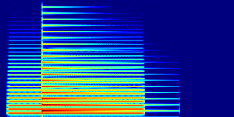
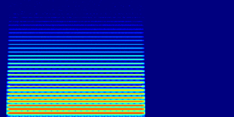
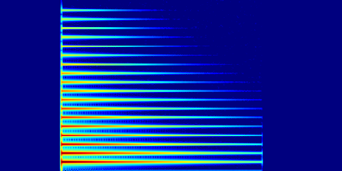
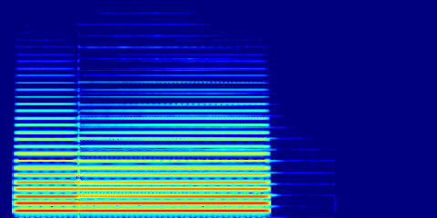
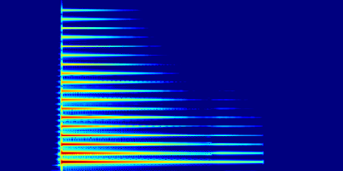
Other 3 outputs: 0.00 % of the output energy.
Example 2
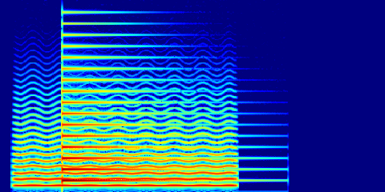
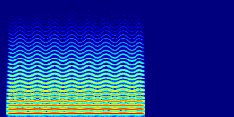
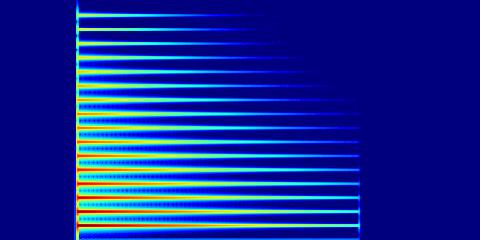
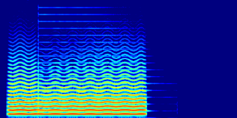
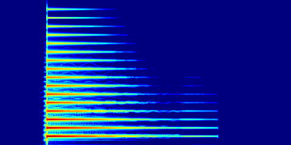
Other 3 outputs: 0.00 % of the output energy.
Example 3
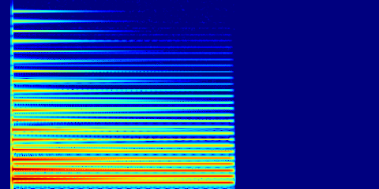
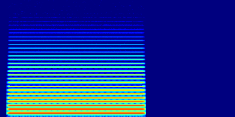
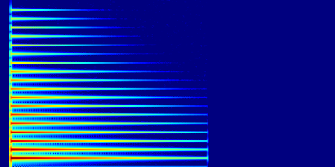
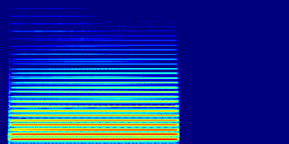
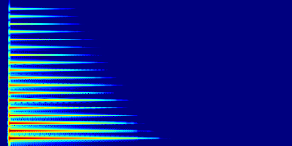
Other 3 outputs: 0.00 % of the output energy.
Example 4
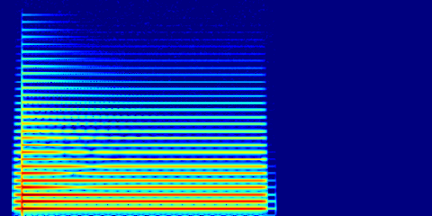
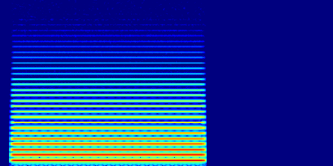
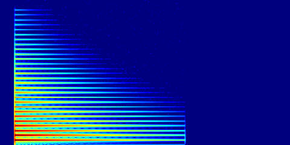
Other 3 outputs: 0.00 % of the output energy.